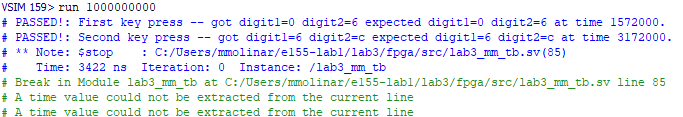

Lab 3: Keypad Scanner
Introduction
In this lab, I designed a circuit interface using an FPGA to read a 4-by-4 matrix keypad and display the results on a dual seven-segement display. I took into account switch debouncing (a physical phenomenon that mechanical switches are prone to), asynchronous inputs, and implemented a robust digital design to ensure accurate behavior with a variety of user inputs.
Design and Testing Methodology
Design Methodology
This design consists of multiple lower level modules, which use time multiplexing to control two seven-segment displays with 4-by-4 matrix keypad inputs. The most recent key-pad entry appears on the right seven-segment display and the “old” entry appears on the left.
I first reconfigured my lab 2 modules to take advantage of code I wrote for multiplexing a dual seven-segment display. So, I was able to reuse my lab 2 top module along with the seven_seg module (used to drive a display with a certain hex digit).
My keypad_decoder module decodes key press inputs from a 4-by-4 keypad and determines what hex digit was pressed. For example, if the row 0 and column 0 are passed through, then a 1 is pressed.
Next, the sync module synchronized raw keypad inputs to the FPGA’s clock domain in order to avoid metastabilty caused by asynchronous inputs. This synchronizer was implemented as a chain of two flip flops.
My debouncer module was used to counteract switch bounce caused by pressing a mechanical switch. My deboouncer was just a clock divider that waits for a set amount of time before updating the output, ensuring that it’s stable.
My keypad_fsm module implements scanning logic to properly drive the seven-segment displays while accomodating different user inputs. My FSM drives all rows as an input and cycles through columns outputting a 1. The row being pressed gets detected allowing for a transition past the IDLE state. Once out of the IDLE state, the columns stop cycling, which keeps the appropriate row and column connected. This will make sure the correct digit corresponding to the users input will be displayed. After passing through all the intermediate states, the FSM stays at the HOLD state, until the user releases the inital key press. Then the cycle can restart allowing for new inputs (see Figure 1).
Finally, lab3_mm, my top modules, integrated all the lower level modules to display the detected key value on the seven-segment display. Inside this top module, there is a mux that drives the old digit entry to the left display and the newest digit entry to the right display.
(Figure 1: Keypad FSM State Transition Diagram)
Testing Methodology
Testing this design was done via simulation and hardware verification.
First all lower level modules were simulated on their own to make sure they behaved as intended. Then, for simulation of the top module, only a few casses were tested since appropriate behavior was verified in the lower level module testbenches. The top module test bench used the tranif1 primitaive, which is a conditional bidirection switch. Therefore, to model the hardware, I made 16 switches to represent the 4x4 keypad.
Technical Documentation:
The source code for the project can be found in the associated GitHub repository.
Block Diagrams
(Figure 2.1: lab3_mm Block Diagram of the Verilog Design)
(Figure 2.2: lab2_mm Block Diagram of the Verilog Design)
(Figure 2.3: keypad_fsm Block Diagram of the Verilog Design)
The block diagram in Figure 2.1 demonstrates the overall architecture of the design. It contains lower level modules sync, lab2_mm (see Figure 2.2), and keypad_fsm (see Figure 2.3).
Schematic
(Figure 2: Schematic of physical layout)
Figure 3 shows the physical layout of the design. The anodes of seven-segment display were connected using 330 Ω current-limmiting resistors and a 2N3906 PNP transitor to ensure the output current was less than 8 mA. The LEDs of the seven-segment display were connected using 1 kΩ resitors, and the 4-by4 matrix keypad’s rows were connected using 10 kΩ pull-down resistors.
Resistor Calculations
According, to the ice40 datasheet, on section 4.17 it says the I/O pins are rated for 8 mA. Thus, I chose 330 Ω resistos for the transistor circuit based on the following calculations:
\[ V = 3.3 - V_f = 3.3 - 0.7 = 2.6 \, \text{V} \]
\[ V = IR \quad \Rightarrow \quad R = \frac{V}{I} = \frac{2.6}{0.008} = 325 \, \Omega \]
For the seven-segment display LEDs, I used 1 kΩ resistors based on the following equation:
\[ V = 3.3 - V_f - V{CE(sat)} = 3.3 - 2 - 0.25 = 1.05 \, \text{V} \]
\[ V = IR \quad \Rightarrow \quad I = \frac{V}{R} = \frac{1.05}{1000} = 1.05 \, mA \]
I didn’t want the LEDs on the display to run too hot or be too bright, so I just used 1 kΩ resistors resulting in a current of 1.3 mA.
Results and Discussion
Test Bench Simulation
(Figure 4: A screenshot of a QuestaSim simulation demonstrating that the debouncer functions as expected.)
(Figure 5: A screenshot of a QuestaSim simulation demonstrating that the keypad decoder decodes key switch inputs as expected.)
(Figure 6: A screenshot of a QuestaSim simulation demonstrating the FSM works correctly and that state transitions happen go to the correct states after certain stimuli.)
(Figure 7: A screenshot of a QuestaSim simulation demonstrating that the synchronizer has its intended behavior.)
(Figure 8: A screenshot of a QuestaSim simulation demonstrating that all sub-modules work together accurately to scan and read user inputs on a 4-by-4 matrix keypad.)
(Figure 9: A screenshot of a QuestaSim simulation message demonstrating that all tests in the above simulation passed.)
The design met most intended design objectives. Figure 4 shows that the debouncer module works as a counter to avoid one key press being registered as multiple inputs. Figure 5 shows that the keypad decoder accurately decodes user inputs on a 4-by-4 keypad. Figure 6 shows that the FSM works in that it under goes the correct transitions at the right times. Figure 7 shows that the synchonizer uses a chain of two flip-flops to synchronize asynchronous inputs. Finally, Figures 8 and 9 show that the top module works as intended and that it accurately merges all sub-modules.
Hardware
After simulation was done, a 4-by-4 keypad was connected and the keypresses were tested. The correct hex digits were displayed on the appropriate seven-segment displays, the design doesn’t lock up when multiple buttons are pressed at once, and each number is only registered once (no switch bouncing).
Conclusion
The design succesfully detected and displayed keypad inputs on the dual seven-segment display without locking up and without registering a number more than once. However, I wasn’t able to cover the case where I would hold one key, press another, then release the first key. In this case, the first key should go to the left display after relaesed, and the second key that is still being held should appear on the right. This was only an issue when pressing keys in the same column, and I think this is the case because pressing keys on the same column would cause a short keeping the FSM in the HOLD state. I spent a total of 25 hours on this lab.
AI Prototype Summary
For the following AI Prototype, I will be using ChatGPT.
Prompt 1 (Monolithic)
Target device: Lattice iCE40 UP5K FPGA with internal high-speed oscillator (~20 MHz).
Write synthesizable SystemVerilog to scan a 4x4 matrix keypad and display the last two hex keys pressed on a dual 7‑segment display. Implement:
A clock divider that derives a scan clock on the order of 100–200 Hz from the internal oscillator. A keypad scanning controller that iterates one active‑low column at a time and samples active‑low rows, registering at most one key per press (debounce‑by‑design), ignoring additional presses while any key is held, and allowing a new registration only after release. A top level that updates two hex digits (older and most recent) when a new key is registered and drives a time‑multiplexed two‑digit 7‑segment display without visible flicker and with balanced brightness. Use idiomatic SystemVerilog (e.g., logic, always_ff, enumerated states for FSMs). Provide clean module boundaries and keep all state synchronous. Include brief comments explaining the design choices.
Prompt 2 (Modular)
LLM Prompt 1
Target device: Lattice iCE40 UP5K FPGA.
Overall Goal: Write SystemVerilog to scan a 4x4 matrix keypad and display the last two hex keys pressed on a dual 7 segment display.
Current Goal: Write a synthesizable SystemVerilog module that produces a one‑shot registration signal for the keypad system. Behavior:
When a key press is first detected, capture the current key code and assert a single‑cycle “new key” pulse. While any key remains pressed, do not accept additional keys. Only after keys are released should a subsequent press be recognized. This should handle debouncing of the keys. Implement as a small synchronous FSM with enumerated states and glitch‑free outputs. Keep names and interfaces reasonable; do not assume any hidden modules beyond what you define here.
LLM Prompt 2
Target device: Lattice iCE40 UP5K FPGA.
Write a synthesizable SystemVerilog module that cycles through keypad columns (active‑low, one at a time) and samples rows (active‑low) to detect a single key at a time. Behavior:
Iterate columns at a suitable scan rate derived from the divided clock and sample rows. When a key is detected, report a stable key code consistent with a standard 4x4 keypad layout and maintain it while the key remains pressed. Provide a boolean signal indicating whether any key is currently pressed. Use clean state encoding and synchronous logic; avoid combinational feedback and latches.
LLM Prompt 3
Target device: Lattice iCE40 UP5K FPGA with internal oscillator as the root clock source.
Write a top‑level SystemVerilog module that instantiates the scanner and one‑shot modules, shifts the last two keys (older ← most recent; most recent ← new), and drives a multiplexed two‑digit seven‑segment display. Requirements:
Update the displayed digits only when a new key is registered. Ensure equal apparent brightness and no visible flicker. Keep all logic synthesizable and synchronous; use idiomatic SystemVerilog constructs. Provide any small clock‑enable or divider logic you need. You can also assume that a sevenSegment module exists that takes a 4 bit input and outputs the 7 segments.
Generated Code
The code generated for these prompts can be found here.
Reflection
The monoloithic prompt synthesized first try while the modular prompt did not. I find this to be very surprising because I thought that if your peompt was too large, then LLMs wouldn’t be able to produce accurate results since there is too much context. I feel like modularizing prompts improved readability because it split the lab into multiple files, but then I had asked it to combine everything into one file, which is probably where it went wrong. The modular did modularize the design in a similar way in which the prompts were split up, which is to be expected because it was prompted in that way to do so. One interesting SystemVerilog idiom that the LLM used was “function automatic logic”. I thought this was weird/surprising because I don’t really understand the point in this. When trying to synthesize the modular prompts, it kept running into the following error, even after being fed the message: an enum variable may only be assigned to same enum typed variable or one of its values. As a result of these tests, the next time I use AI I think it’s probably best to give AI as much context as possible so that its output covers all behavior you intend for.